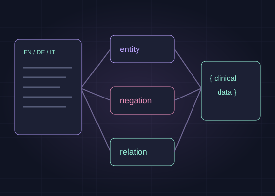

Dedalus ↗NLP engineer & Technical Product Manager
2022–2026A multilingual clinical NLP platform
I developed a multilingual clinical NLP platform and coordinated its delivery: extracting medical entities, linking them to standard terminology, and identifying relations, negation and context.
- Built model and dataset workflows, reusable LLM-assisted labelling, and reproducible training and evaluation.
- Migrated inference to Triton and ONNX, and resolved performance and memory bottlenecks.
- As Technical Product Manager from 2025, coordinated a 5+ person NLP delivery track across requirements, planning, verification and releases.
More about my work
- Automated model evaluation and load testing, and coordinated the first full-scale verification.
- Refactored the pipeline around configuration and shared model-lifecycle tools; maintained integration contracts and release documentation.
- Mentored a TUM Master’s student on LLM workflows and organised technical knowledge sharing.

- Up to 8×
- faster processing on individual components
- Around 90%
- less annotation cost and turnaround with LLM-assisted labelling